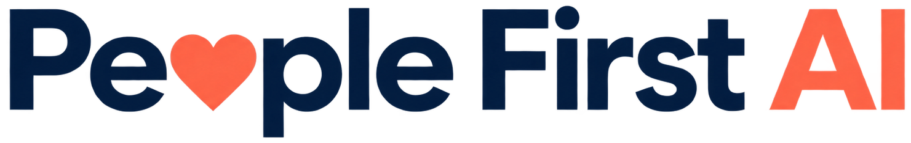

Wysłuchaj
Rozpoznaj emocje, obawy i potrzeby. Zacznij od tego, jak ludzie doświadczają zmiany.

Bądź na bieżącoKURS O LUDZKIEJ STRONIE AI
Technologia się zmienia.
Ludzie mają znaczenie.
Naucz się przeprowadzać ludzi przez zmianę AI.
Z perspektywy lidera i osoby, która doświadcza jej na co dzień.
5tygodni wspólnej nauki
10warsztatów na żywo
20godzin praktyki
1Twój plan transformacji
Wdrożenie AI to dopiero początek. O tym, co wydarzy się dalej, decydują zaufanie, komunikacja i poczucie wpływu.
Jak wesprzeć
mój zespół?
Jak odnaleźć
własne miejsce?
Nie musisz znać odpowiedzi na każde pytanie o AI. Potrzebujesz umieć słuchać, rozmawiać o niepewności i tworzyć warunki, w których ludzie mogą próbować.
Nie chodzi o przekonanie wszystkich do AI za wszelką cenę.
Chodzi o odpowiedzialne przeprowadzenie ludzi przez zmianę.
NASZ WSPÓLNY PUNKT WYJŚCIA
Pięć filarów HUMAN pomaga zamienić dobre intencje w konkretne działania. To cykl — do słuchania i uczenia się wracamy przez cały czas.
Rozpoznaj emocje, obawy i potrzeby. Zacznij od tego, jak ludzie doświadczają zmiany.
Zdiagnozuj gotowość, kulturę i kompetencje. Szukaj przyczyn, zamiast oceniać opór.
Włącz liderów i ambasadorów. Daj pracownikom przestrzeń do dialogu i realny wpływ.
Rozwijaj kompetencje i bezpieczne eksperymenty. Zmieniaj podejście dzięki informacji zwrotnej.
Mierz skutki, ucz się z sukcesów i niepowodzeń. Buduj zdolność do dalszej zmiany.
OD ROZUMIENIA DO DZIAŁANIA
Każdy warsztat kończysz z narzędziem, ćwiczeniem lub decyzją. Krok po kroku budujesz własny plan transformacji AI.
DLA TYCH, KTÓRZY PRACUJĄ Z LUDŹMI
Ten kurs jest dla Ciebie, jeśli pomagasz innym odnaleźć się w zmianie — niezależnie od stanowiska.
POZNAJMY SIĘ
Technologia ma wzmacniać ludzi.
Łączymy perspektywę organizacji z codzienną praktyką zmiany.
Przywództwo. Zmiana. Rozwój ludzi.
Patrzy na zmianę z perspektywy liderów i całej organizacji — z człowiekiem w centrum.
Head of Learning & Development w Ringier Axel Springer Polska, założycielka Future Craft Lab i członkini zarządu Fundacji Digital Poland. Od niemal 20 lat łączy świat technologii, biznesu i ludzi.
Rozwija inicjatywy edukacyjne, w tym Akademię AI. Wspiera liderów w budowaniu kompetencji, zaufania i sprawczości potrzebnych podczas transformacji.
Praktyka. Społeczność. Codzienna praca.
Patrzy na zmianę z perspektywy pracownika i ambasadora, który pomaga innym oswoić technologię.
Corporate Capabilities Specialist w Ringier Axel Springer Polska, wcześniej Prompt Engineer i developer. Łączy doświadczenie w projektowaniu rozwiązań AI i automatyzacji z edukacją oraz rozwojem kompetencji.
Prelegent i ambasador społeczności technologicznych. Dzieli się doświadczeniami z wdrożeń, eksperymentów i błędów — pokazując, jak AI może wzmacniać ludzkie możliwości.
WIEDZA, KTÓRA ZOSTAJE W PRAKTYCE
People-Centred AI Change Plan
Przez cały kurs pracujesz nad jednym projektem — własnym wyzwaniem organizacyjnym lub przygotowanym studium przypadku.
To punkt wyjścia do rzeczywistej zmiany w Twojej organizacji.
Kohorta, rozmowy i wymiana doświadczeń.
Ćwiczenia, symulacje i wzajemny feedback.
Scenariusze rozmów i warianty komunikacji.
JESZCZE CHWILA NA PYTANIA
PEOPLE FIRST. TAKŻE W ŚWIECIE AI.
Zrób miejsce dla ludzi w transformacji AI.
Pięć tygodni, dwie perspektywy i Twój plan działania.
Zostaw e-mail, aby dowiedzieć się o starcie zapisów.